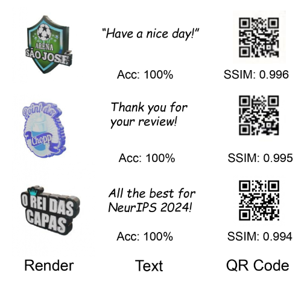
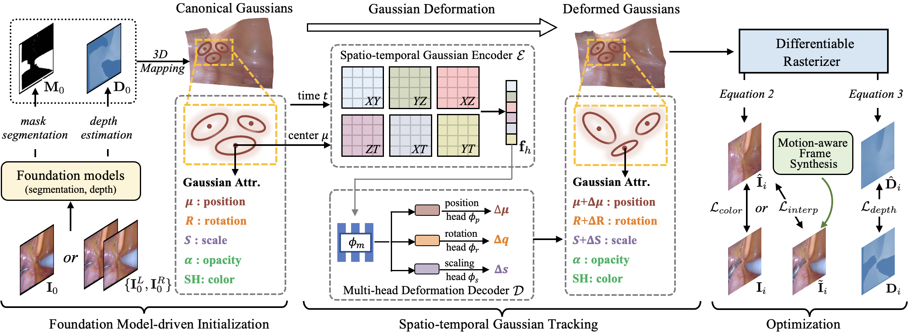
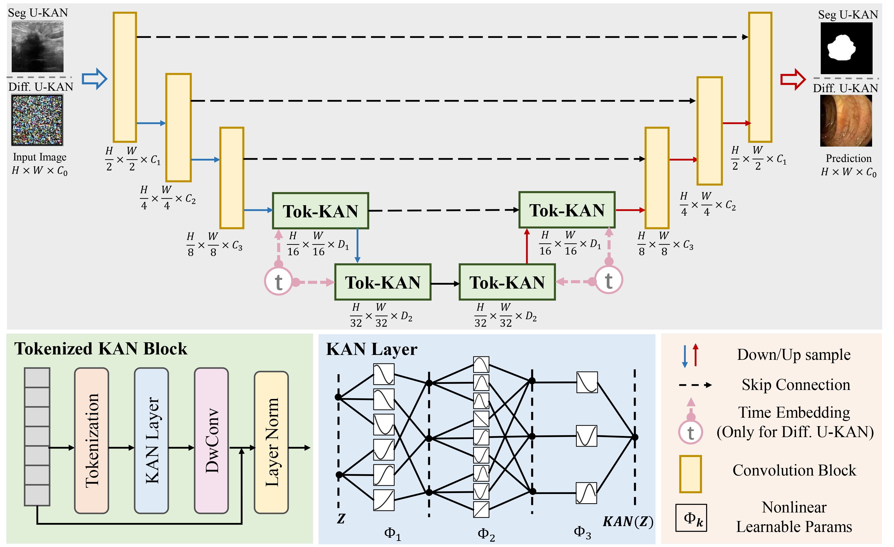
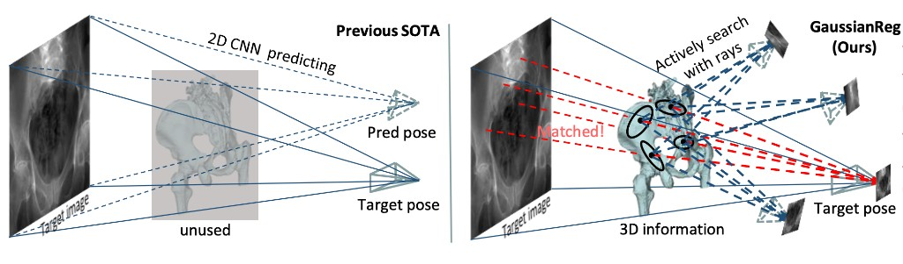

Ph.D. in Electronic Engineering
The Chinese University of Hong Kong (CUHK), 2021–2026
Advisor: Prof. Yixuan Yuan
Ph.D. Candidate @ CUHK
liuyifan365[at]gmail.com
I am a final-year Ph.D. student in the Department of Electronic Engineering at the Chinese University of Hong Kong (CUHK), supervised by Prof. Yixuan Yuan. Prior to that, I received my B.Eng. in Electronic Information Engineering from Huazhong University of Science and Technology (HUST) in 2021. During my Ph.D., I have been fortunate to work with Dr. Zhenwei Wang and Dr. Tengfei Wang at the Tencent HY 3D Generation Team. I have also been fortunate to collaborate with industry, particularly with Tencent HY and ByteDance Seed.
My research focuses on video and 3D world models, 3D reconstruction, and generative AI, with an emphasis on building generalizable systems for immersive and interactive world understanding and generation.
I'm always open to related discussions and collaborations. If you are interested in my work, please feel free to contact me.
The Chinese University of Hong Kong (CUHK), 2021–2026
Advisor: Prof. Yixuan Yuan

Huazhong University of Science and Technology (HUST), 2017–2021
A 3D world reconstruction framework capable of producing immersive, explorable, and interactive scenes from arbitrary-view inputs.
(*equal contribution)
A universal 3D reconstruction framework capable of processing diverse input modalities and generating various output representations.
A generalizable 3D Gaussian Splatting approach from monocular depth foundation models.

An initial exploration into embedding customizable, imperceptible, and recoverable information within the renders produced by off-the-line 3D generative models, while ensuring minimal impact on the rendered content's quality.

The first work to apply 3D Gaussian Splatting for dynamic (4D) endoscopic reconstruction, guided by foundation models.

Introducing Kolmogorov-Arnold Networks (KANs) as a strong backbone for medical image segmentation and generation.

Rapid 2D/3D registration for emergency surgery using sparse Gaussian primitives and a ray-based registration scheme.
Curiosity and enthusiasm shape both my research and my life. I'm also passionate about basketball🏀, hiking⛰️, swimming🏊♂️, table tennis🏓, and badminton🏸.